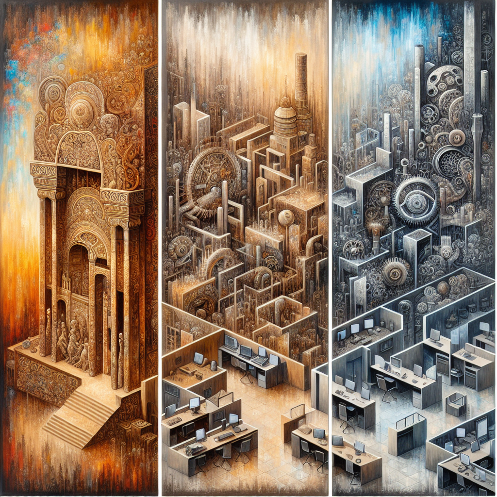
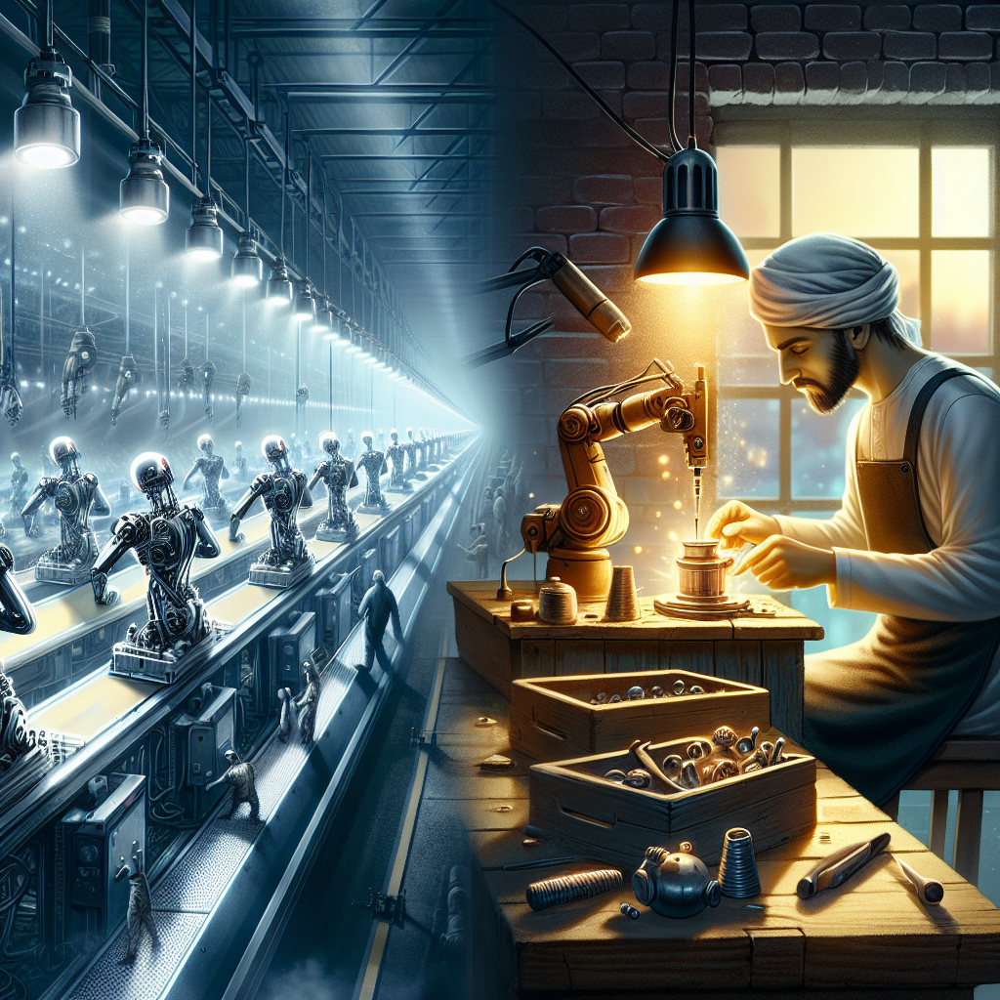

AI時代，你唯一的護城河是「你自己」🔒 已上傳（私人）
🎬 Stage 影片
📺 原始影片
🖼 章節背景圖（DALL-E 3）
00 · 開場
AI時代的意義危機
0:00 → ~0:40

01 · Chapter
意義消失的歷史
~0:40 → ~1:20

02 · Chapter
後勞動經濟危機
~1:20 → ~2:00
03 · Chapter
換人測試
~2:00 → ~2:40
04 · Chapter
AI複製不了的五件事
~2:40 → ~3:20
05 · Chapter
後AI技能組合
~3:20 → ~3:46
🖼 YouTube 封面

設計說明
背景 深紫→黑漸層
照片 DALL-E 3（人物在光柱中，AI機器人無法觸及）
大標 你的護城河
強調 唯一解
副標 後AI高收入技能組合
Speaker 無（概念型影片）
✍️ 中文腳本
載入中...
📺 YouTube 發布設定
▶
愛播客 — YouTube 發布文案
🔒 已上傳（私人）AI時代，你唯一的護城河是「你自己」｜後AI高收入技能組合
你有ChatGPT，有Claude，有所有AI工具——但你還是選擇自己來聽這段播客。這個選擇本身，就是今天的答案。
🔑 本集重點：
1. AI搶走的不只是工作，還有「意義」——意義的四個歷史轉移
2. 後勞動經濟：AI如何打破工作→薪水→消費的循環？哪些工作能存活？
3. 換人測試：把你換掉，這個作品還值同樣的錢嗎？
4. AI複製不了的五件事：觀點、知識簽名、意義建構、人生軌跡、品味進化
5. 後AI高收入技能組合：主動性→品味→視角→說服力→工具
📌 時間章節：
00:00 你為什麼還在看？
00:44 意義的三次轉移
01:27 當AI破壞了那個循環
02:11 換人測試
02:54 AI複製不了的五件事
03:37 後AI技能組合
📺 原始來源：
Dan Koe — The Future Of Work (& The New High-Income Skill Stack)
https://youtu.be/vCoGfisdS8Y
🔗 相關參考：
• Dan Koe 官方網站：https://thedankoe.com
• 後勞動經濟 David Shapiro：https://www.youtube.com/@DavidShapiroAI
🎙 94iVoice — AI 與科技深度解析
歡迎訂閱 → https://www.youtube.com/@94ivoice
#AI時代 #未來工作 #創作者經濟 #技能組合 #94iVoice #護城河 #換人測試 #後AI時代
科技與科學（Science & Technology）｜🔒 私人（審閱後改公開）
✅ 已上傳為私人影片 · ID: mGy6aJ3eOt8 · 審閱後至 YouTube Studio 改公開